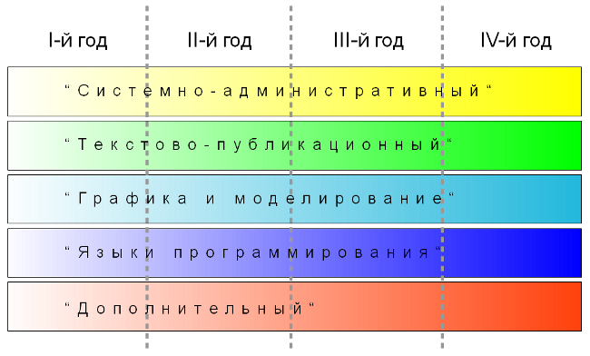

Данная программа дополнительного образования детей была создана в 2009 году. В 2011 году была изменена. Изменения коснулись в основном модуля "Программирование". Если раньше все программирование было завязано под Python, то сейчас рассматриваются не только различные парадигмы программирвания, но и разные языки (Logo, Python, Pascal, C, C++ и др.).
Образовательная программа "Лаборатория юного линуксоида" разработана для объединений, реализующих программы дополнительного образования детей, связанные с информационными технологиями.
Программа реализуется с 2008 года, вторая редакция программы была написана в 2011 году.
Возраст обучающихся: 11-16 лет (включительно). Возраст учащихся, приступающих к освоению данной программы по первому году обучения, — 11-13 лет.
Срок реализации программы: 4 года.
Возможные формы обучения: групповая, индивидуальная, дистанционная.
Количество часов в год: 144 — первый год обучения, 216 — второй и последующие.
Продолжительность одного занятия: 2 академических часа. Количество занятий в неделю: 2 — для первого года обучения, 3 — для второго и последующих.
В связи с тем, что объем информации, связанной с информационными технологиями, огромен, существует проблема выбора предмета изучения и последовательности изучения различных направлений ИТ. В данной программе эта проблема решается за счет того, что учащиеся на каждом году обучения получают законченный объем знаний определенного уровня по различным направлениям (модулям) информационных технологий. В следующем году происходит углубление и расширение знаний по каждому из модулей. Каждый год обучения состоит из пяти модулей, которые можно условно назвать: "Системно-административный", "Текстово-публикационный", "Графика и моделирование", "Программирование" и "Дополнительный". Так, например, в "системно-административном" модуле учащиеся на первом году обучения осваивают принципы работы в различных графических средах, на втором году — учатся работать в режиме командной строки, и к четвертому — знакомятся с основными понятиями и принципами работы операционной системы.

Несмотря на то, что программа состоит из различных модулей, программированию уделяется большее внимание (чуть менее половины от количества часов всей программы). Поэтому программа способствует ранней профессиональной ориентации обучающихся.
Использование СПО позволяет гарантировать равные возможности участникам образовательного процесса, несет в себе воспитательное значение как демонстрация положительного результата открытости и взаимодействия профессионального сообщества.
С целью методической поддержки программы был создан сайт (http://younglinux.info), на котором в открытом доступе находятся дидактические материалы к занятиям. Обучающиеся могут воспользоваться этим материалом для самообучения, задать вопрос по изучаемой теме, получить консультацию.
Цель программы — создание условий для профессионального самоопределения обучающихся, формирование у них информационной картины мира посредством разностороннего изучения компьютерных технологий.
В конце первого года обучения учащийся должен иметь следующие
знания:
умения:
навыки:
В конце второго года обучения учащийся должен иметь следующие
знания:
умения:
навыки:
В конце третьего года обучения учащийся должен иметь следующие
знания:
умения:
В конце четвертого года обучения учащийся должен иметь следующие
знания:
умения:
Название модулей
I - "Системно-административный"; II - "Текстово-публикационный"; III - "Графика и моделирование"; IV - "Программирование"; V - "Дополнительный"
| Модуль | № темы | Название темы | Всего часов | Теория | Практика |
|---|---|---|---|---|---|
| I | 1 | Знакомство с операционными системами семейства GNU/Linux | 4 | 4 | 0 |
| 2 | Принципы работы в графических средах на примере одной из них | 10 | 5 | 5 | |
| 3 | Разнообразие графических сред пользователя | 4 | 2 | 2 | |
| II | 4 | Обработка текстовой информации | 16 | 8 | 8 |
| 5 | Создание компьютерных презентаций | 8 | 2 | 6 | |
| III | 6 | Компьютерная графика | 4 | 4 | 0 |
| 7 | Создание растровой графики | 8 | 3 | 5 | |
| 8 | Создание векторной графики | 18 | 9 | 9 | |
| 9 | Введение в графический дизайн | 4 | 2 | 2 | |
| IV | 10 | Введение в программирование на языке Logo | 36 | 16 | 20 |
| 11 | Среда программирования Scratch | 20 | 10 | 10 | |
| V | 12 | Основы компьютерной 2D-анимации | 12 | 6 | 6 |
| Итого: | 144 | 71 | 73 | ||
| Модуль | № темы | Название темы | Всего часов | Теория | Практика |
|---|---|---|---|---|---|
| I | 1 | Файловая система, типы файлов, права доступа в GNU/Linux | 4 | 4 | 0 |
| 2 | Основы работы в командной оболочке Bash | 20 | 10 | 10 | |
| 3 | Распространенные утилиты Unix-подобных систем | 4 | 2 | 2 | |
| II | 4 | Знакомство с языком гипертекстовой разметки HTML 4 | 16 | 8 | 8 |
| 5 | CSS – язык описания внешнего вида html-документов | 16 | 8 | 8 | |
| 6 | Особенности HTML 5 | 6 | 3 | 3 | |
| III | 7 | Обработка изображений при помощи GIMP | 14 | 6 | 8 |
| 8 | Текстовые эффекты | 4 | 0 | 4 | |
| IV | 9 | Парадигма структурного программирования | 6 | 6 | 0 |
| 10 | Язык программирования Python | 36 | 18 | 18 | |
| 11 | Язык программирования Pascal | 24 | 12 | 12 | |
| 12 | Алгоритмы решения задач | 30 | 10 | 20 | |
| 13 | Разработка и создание программ | 12 | 4 | 8 | |
| V | 14 | Создание сайта на Drupal | 24 | 12 | 12 |
| Итого: | 216 | 103 | 113 | ||
| Модуль | № темы | Название темы | Всего часов | Теория | Практика |
|---|---|---|---|---|---|
| I | 1 | Режимный текстовый редактор Vim | 6 | 3 | 3 |
| 2 | Многофункциональный редактор Emacs | 8 | 4 | 4 | |
| II | 3 | Особенности верстки публикаций | 16 | 6 | 10 |
| III | 4 | 3D-моделирование и анимация в Blender | 40 | 20 | 20 |
| 5 | Основы Blender Game Engine | 24 | 10 | 14 | |
| 6 | Реализация творческих работ в среде Blender | 12 | 3 | 9 | |
| IV | 7 | Принципы объектно-ориентированного программирования (ООП) | 6 | 6 | 0 |
| 8 | Реализация парадигмы ООП в языке Python | 26 | 12 | 14 | |
| 9 | ООП на Pascal | 16 | 8 | 8 | |
| V | 10 | Обзор инструментов для создания графического интерфейса пользователя | 4 | 4 | 0 |
| 11 | Программирование GUI с помощью Tkinter | 28 | 14 | 14 | |
| 12 | Разработка приложений в Lazarus | 30 | 10 | 20 | |
| Итого: | 216 | 100 | 116 | ||
| Модуль | № темы | Название темы | Всего часов | Теория | Практика |
|---|---|---|---|---|---|
| I | 1 | Основы операционных систем | 16 | 10 | 6 |
| II | 2 | Знакомство с языком TeX. Основы работы с издательской системой LaTeX | 24 | 10 | 14 |
| III | 3 | Создание диаграмм и схем | 6 | 2 | 4 |
| 4 | Диаграммы связи (ментальные карты) | 6 | 3 | 3 | |
| 5 | Знакомство с CAD-системами и их назначением | 6 | 3 | 3 | |
| 6 | Знакомство с языком UML. Создание UML-моделей | 8 | 4 | 4 | |
| IV | 7 | Особенности языка программирования C | 48 | 22 | 26 |
| 8 | Объектно-ориентированное программирование на C++ | 24 | 10 | 14 | |
| 9 | Использование библиотеки QT | 36 | 16 | 20 | |
| V | 10 | Электронные таблицы | 12 | 6 | 6 |
| 11 | Теория реляционных баз данных | 6 | 6 | 0 | |
| 12 | Системы управления базами данных | 24 | 10 | 14 | |
| Итого: | 216 | 102 | 114 | ||
| Год обучения | Программное обеспечение | Пример |
|---|---|---|
| 1 | Операционная система на базе ядра Linux | AltLinux, Ubuntu, Xubuntu, Fedora, Linux Mint и др. |
| Среды рабочего стола | Xfce, KDE, Gnome и др. | |
| Программы для работы с текстом | Kwrite и OpenOffice.org Writer (LibreOffice) | |
| Программа для подготовки презентаций | OpenOffice.org Impress (LibreOffice) | |
| Графические редакторы | KoulorPaint и Inkscape | |
| Среды программирования | KTurtle, Scratch | |
| Программа для создания 2D-анимации | SynfigStudio | |
| 2 | Операционная система на базе ядра Linux | Xubuntu и др. |
| Командная оболочка | Bash | |
| Текстовый редактор | KWrite, Kate | |
| Графический процессор | Gimp | |
| Среды разработки | IDLE, Geany, Eric, FreePascal IDE | |
| Система управления контентом | Drupal | |
| 3 | Операционная система на базе ядра Linux | Xubuntu и др. |
| Многофункциональные текстовые редакторы | Vim и Emacs | |
| Программа для подготовки публикаций | Scribus | |
| Программа для создания трехмерной графики, анимации и моделирования | Blender | |
| Среды разработки | IDLE, Geany, Eric, FreePascal IDE | |
| Среды разработки GUI и графические библиотеки | Tkinter, Lazarus | |
| 4 | Операционные системы на базе ядра Linux | Debian, Fedora, Ubuntu и др. |
| Системы верстки | Tex и LaTeX | |
| Программы для создания диаграмм и схем | Dia, LibreCAD, Umbrello, FreeMind и др. | |
| Компиляторы, редакторы и среды разработки | GCC, KWrite, Kate, QT Creator и др. | |
| Электронные таблицы | LibreOffice Calc | |
| СУБД | LibreOffice Base |